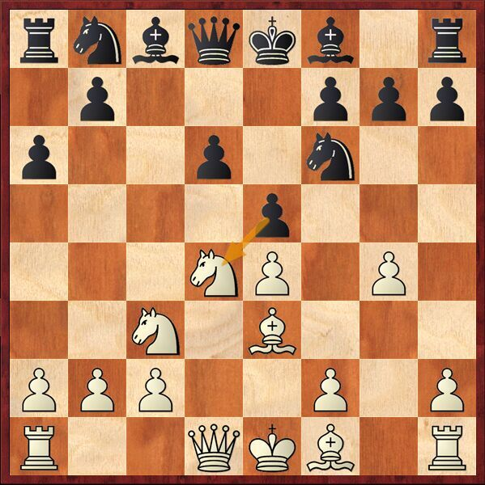

马群棋评
Ma Qun - Rasulov,Vu
世界少年分龄赛
2008.10.28
1.e4 c5 2.Nf3 d6 3.d4 cxd4 4.Nxd4 Nf6 5.Nc3 a6 6.Be3 e6 7.g4 e5 
对方行棋很快，e5之后必然导致一个非常复杂的局面。在之前的对局当中，他都是采用舍为宁根变化，因此这并不在我的准备范围之内，我之前也只在书上零散的看到过一些对局，事到如今，显示战斗无法避免。
8.Nf5 g68...h5的变化同样值得注意，9.g5 Ne4 10.Ng7 Bg7 11.Ne4 d5 12.Ng3 d4，双方互有顾忌。
9.g5 gxf5 10.exf5 d5 11.Qf3这步棋被大多数人所认可。马上长易位让a1车投入战斗，黑方的f6马没有好格子可以去，所以不着急吃回，在这个弃子的变化当中，决定双方的重要因素就是速度。
11...d4 12.0–0–0 Qc7?
很大的一个失误，此时我知道黑方需走12...Nbd7，局面非常复杂。但看到对手动了后，我的心瞬间就豁然了，之前总是担心对手走棋快是有准备，结果搞了半天是在唬我！根据我之前的了解，我坚信这步棋是有问题的，但问题在哪呢？很自然的想到，13.Bxd4 exd4 14.gxf6 dxc3 15.Qe3 Be7 16.fxe7 cxb2 17.Kxb1 Nd7 ( 17...Nc6 18.Qc3! Qe5 19.Qe5 Ne5 20.Rd8 Ke7 21.Rh8，白胜 ) 18.Rg1 h5 19.f6白胜，但再看的时候就会发现问题，黑方为什么要把d线让出去呢，打开d线将会给白方致命的进攻，所以14…Nc6是必须要走的一步棋，黑方已经多了一个子，15.Nd5 Qa5 16.Bc4 Bd6 17.Rhe1 Kd8很难判断谁更有机会一些，黑方的王在d8比较舒适，两个黑车可以放到f8格和c8进行防守，白方也看不到非常好的突破方向，局势复杂不明。这个时候弃车的想法在我脑海里闪过，讨厌的黑方d兵将会给黑王提供d8的去处，我相信彻底打开局面将会给白方更多的机会，弃子换来的出力优势，会让h1车快速的投入到战斗中，能及时提供火力支持。
13.Rd4!! exd4 14.Bxd4 Nbd7 15.gxf6 Kd8没有更好的棋可以选择，若想赶在白车到达d1之前行动：15...Qd6 16.Qe3 Kd8 17.Ne4 Qd5 18.Bg2 Bh6 19.Qh6 Qd4 20.Rd1 Qb4 21.a3!! Qa5 22.Qg7 Re8 23.Qf7白方的攻势黑方很难阻挡，白胜。
16.Nd5 Qc6 17.Bg2 Bc5 18.Bc3电脑指出18.Rd1 Bxd4 19.Rxd4的变化，仍给出白稍好，虽能进一步削弱黑方的黑格，但我没有找到很好的进攻计划和方向，我觉得留下黑格象能带给白方更多的机会。
18...a5电脑招法，顽强的防守。如果想活跃自己的后翼子力，走18...b6，将遭遇19.Rd1 Bb7 20.Qh5 Rf8 21.Nf4！ Qa4 22.Ne6 fxe6 23.Bxb7 Qf4 24.Bd2 Qxf5 25.Qxf5 exf5 26.Bxa8，白大优，黑方在这个残局当中很难守和。
19.Rd1随着这个车的加入，黑方防守的压力大增，没有很理想的方向，只能等待白方发起进攻的那一刻。
19...Rg8 20.Qh3!好棋，准备从王翼开始逐渐渗透，并闪出h1-a8大斜线，伺机而动。
20...Qa4?终于犯错误了，我不确定对方不犯错的话我还能不能坚持下去，此时更是需要冷静的时候。最顽强的防守是走20...Bd6，必须挡住致命的d线，白方21.Bf3后形成一个双方互有顾忌的局面，白方应该机会还是更多一点。
21.Be5!也能获胜的是：21.Qxh7 Rxg2 22.Be5 Nf8 23.Nc7 Bd7 24.Qxf7 Kc8 25.Ne6 b6 26.Nxc5 bxc5 27.Qxf8 Kb7 28.Qxa8!! Kxa8 29.f7，以一个排局式的局面结束战斗，可遇而不可求，一盘好棋总是能让人心旷神怡，这也是国际象棋的一种魅力所在吧。
21...Nxe5只能再次接受弃子，以下着法也不能挽救败局，21...Qc6 22.Qxh7 Rf8 23.Qg7 Re8 24.Nf4 Qg2 25.Ne6 fe6 26.Qg2白胜。
22.Nb6+ Qd4 23.Rxd4 Bxd4 24.Nxa8 Re8 25.Qb3 Bxf2 26.Qd5+ Nd7 27.Qd6 Re1 28.Kd2 Ke8 29.Qc7 Nxf6 30.Qxc8 Ke7 31.Qc7 Kf8 32.Qf4黑方认输。1-0